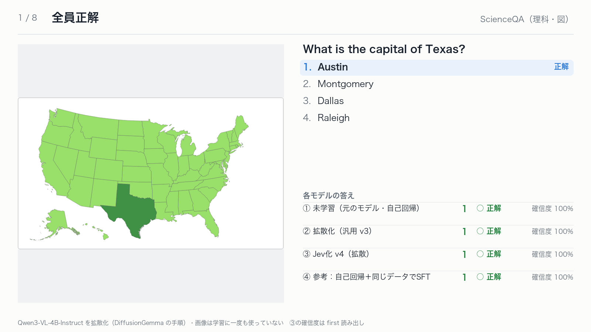
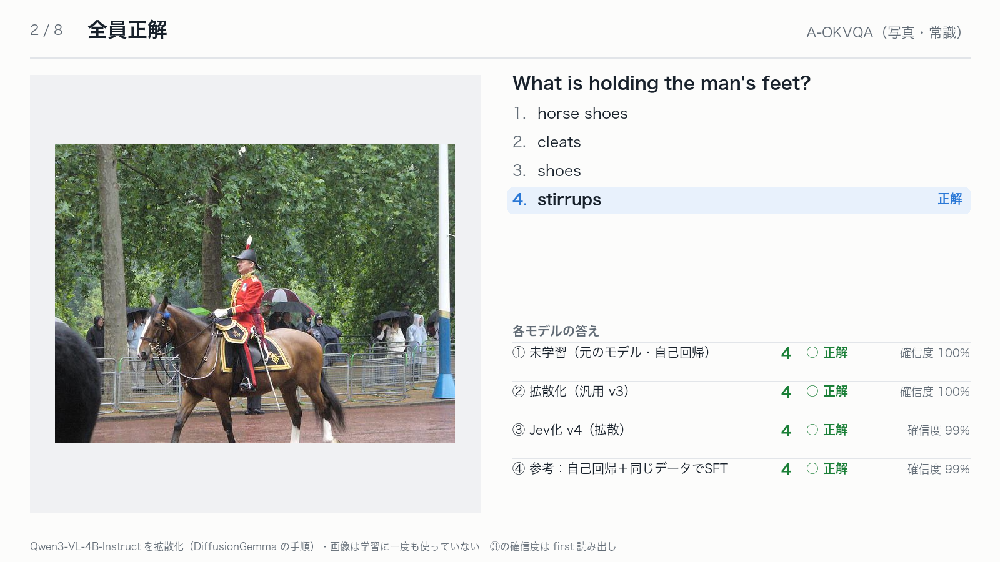
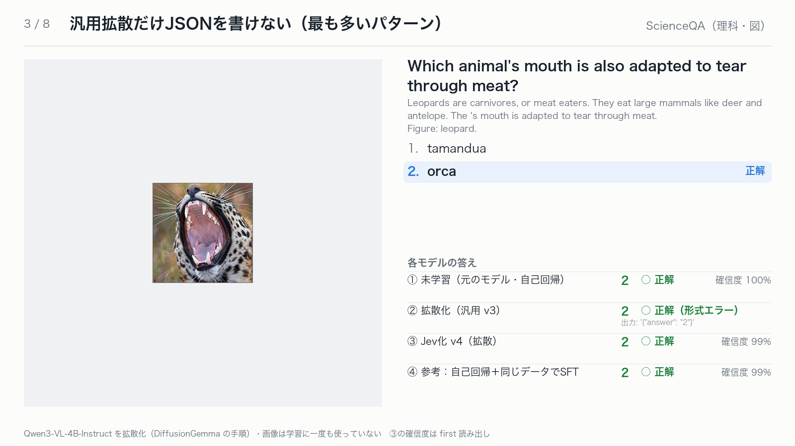
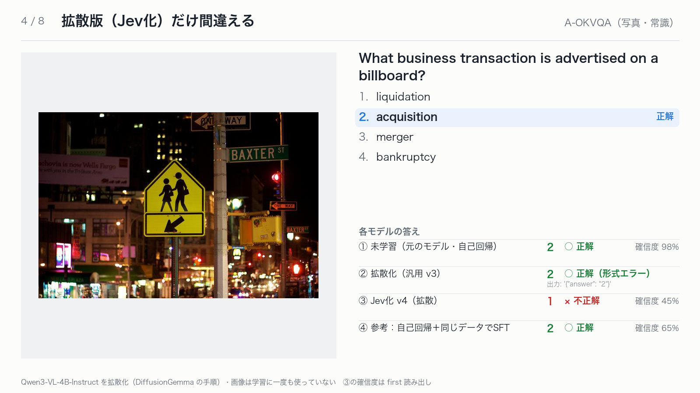
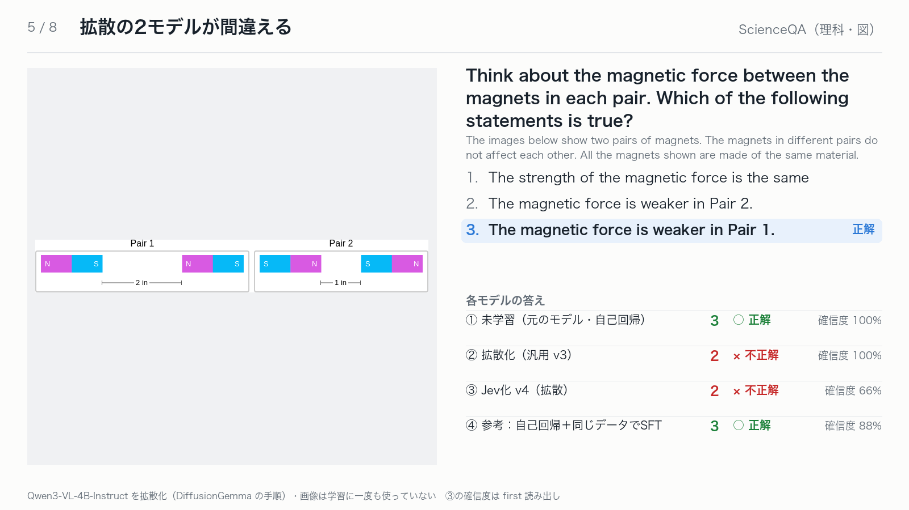
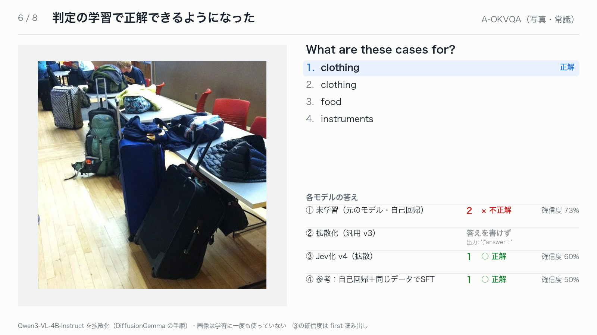
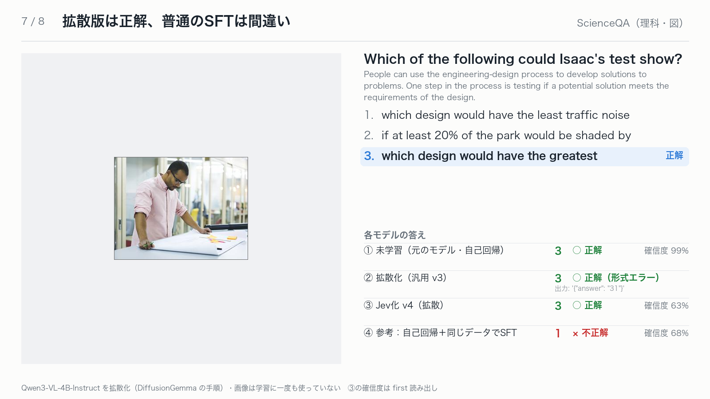
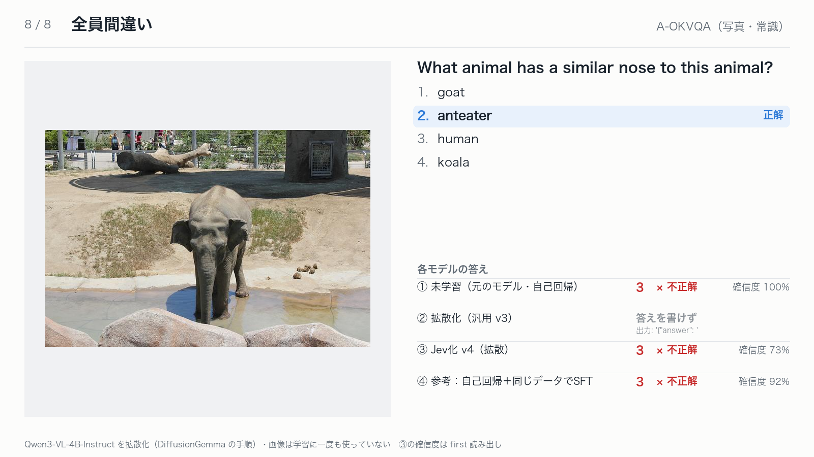

<title>画像の判定スライド</title>
<link rel="stylesheet" href="https://fonts.googleapis.com/css2?family=IBM+Plex+Sans+JP:wght@400;600&display=swap">
<style>
/* Layout: a summary table on top, then the slides stacked one per row. */
:root { --bg:#f2f4f6; --surface:#ffffff; --ink:#18212b; --muted:#5d6874; --line:#d8dee5; --accent:#2a78d6;
  --font:"IBM Plex Sans JP","Hiragino Sans","Noto Sans JP",system-ui,sans-serif; }
@media (prefers-color-scheme: dark) { :root:not([data-theme="light"]) { color-scheme:dark; --bg:#0f141a; --surface:#161d25; --ink:#e5eaf0; --muted:#98a3ae; --line:#2a3440; --accent:#6ea8ef; } }
:root[data-theme="dark"] { color-scheme:dark; --bg:#0f141a; --surface:#161d25; --ink:#e5eaf0; --muted:#98a3ae; --line:#2a3440; --accent:#6ea8ef; }
body { background:var(--bg); color:var(--ink); font-family:var(--font); line-height:1.7; padding:0 20px; }
main { max-width:1200px; margin:0 auto; padding-block:40px 64px; display:grid; gap:28px; }
h1 { font-size:1.6rem; margin:0; font-weight:600; text-wrap:balance; }
p { margin:0; max-width:75ch; color:var(--muted); }
header { display:grid; gap:10px; }
.tbl { overflow-x:auto; }
table { border-collapse:collapse; background:var(--surface); border:1px solid var(--line); font-variant-numeric:tabular-nums; min-width:640px; }
th, td { padding:8px 14px; text-align:right; border-bottom:1px solid var(--line); }
th:first-child, td:first-child { text-align:left; }
thead th { color:var(--muted); font-size:.85rem; font-weight:600; }
.slide { margin:0; }
.slide img { width:100%; height:auto; border:1px solid var(--line); border-radius:8px; display:block; background:#fcfcfb; }
</style>
<main>
<header>
<h1>画像の判定スライド</h1>
<p>Qwen3-VL-4B-Instruct を拡散化したモデルを、画像付きの選択問題 600 問（ScienceQA・A-OKVQA 各 300 問）で学習の段階ごとに比べました。画像は学習に一度も使っていません。下に代表的な 8 問を並べています。</p>
<div class="tbl"><table>
<thead><tr><th>段階</th><th>正解率</th><th>形式を緩めて数えた正解率</th><th>応答時間</th></tr></thead>
<tbody>
<tr><td>① 未学習（元のモデル・自己回帰）</td><td>88.0%</td><td>—</td><td>0.19 秒</td></tr>
<tr><td>② 拡散化（汎用 v3）</td><td>24.7%</td><td>57.0%</td><td>1.93 秒</td></tr>
<tr><td>③ Jev化 v4（拡散）</td><td>86.5%</td><td>—</td><td>0.34 秒</td></tr>
<tr><td>④ 参考：自己回帰＋同じデータでSFT</td><td>89.5%</td><td>—</td><td>0.19 秒</td></tr>
</tbody></table></div>
<p>②は判定の形式を学習していないため、答えの数字を引用符で囲んだり、かっこを閉じなかったりします。形式が崩れていても答えの数字を読むと 57.0% で、画像を読む力自体はかなり残っています。</p>
</header>
<figure class="slide" id="s1"></figure><figure class="slide" id="s2"></figure><figure class="slide" id="s3"></figure><figure class="slide" id="s4"></figure><figure class="slide" id="s5"></figure><figure class="slide" id="s6"></figure><figure class="slide" id="s7"></figure><figure class="slide" id="s8"></figure>
</main>